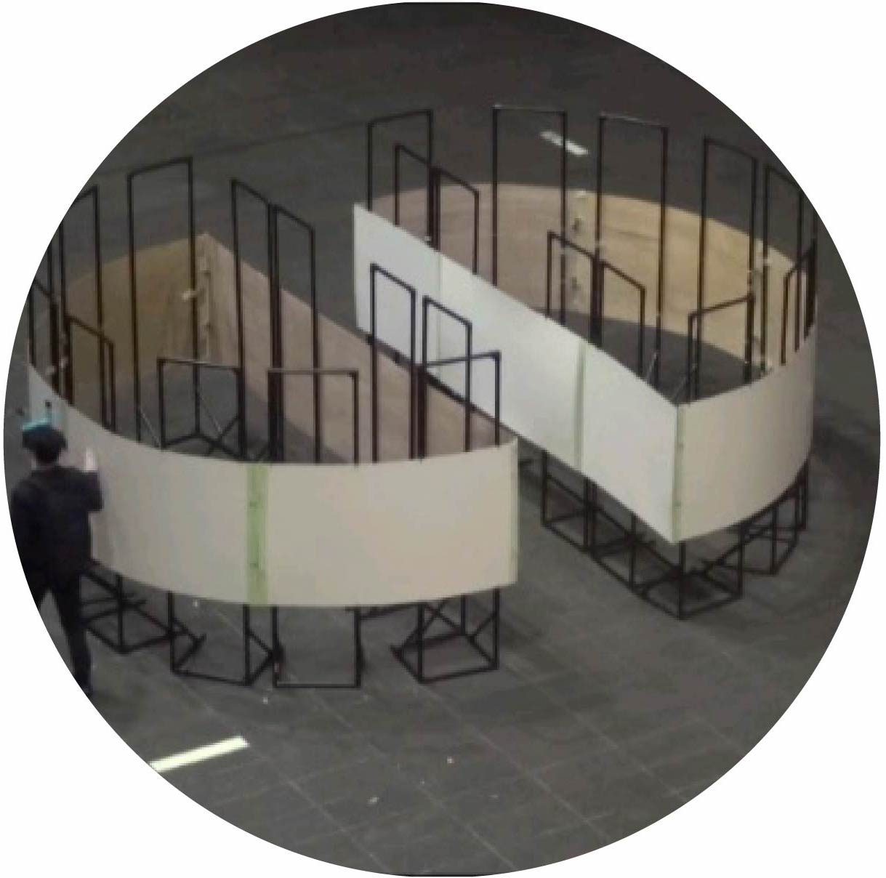
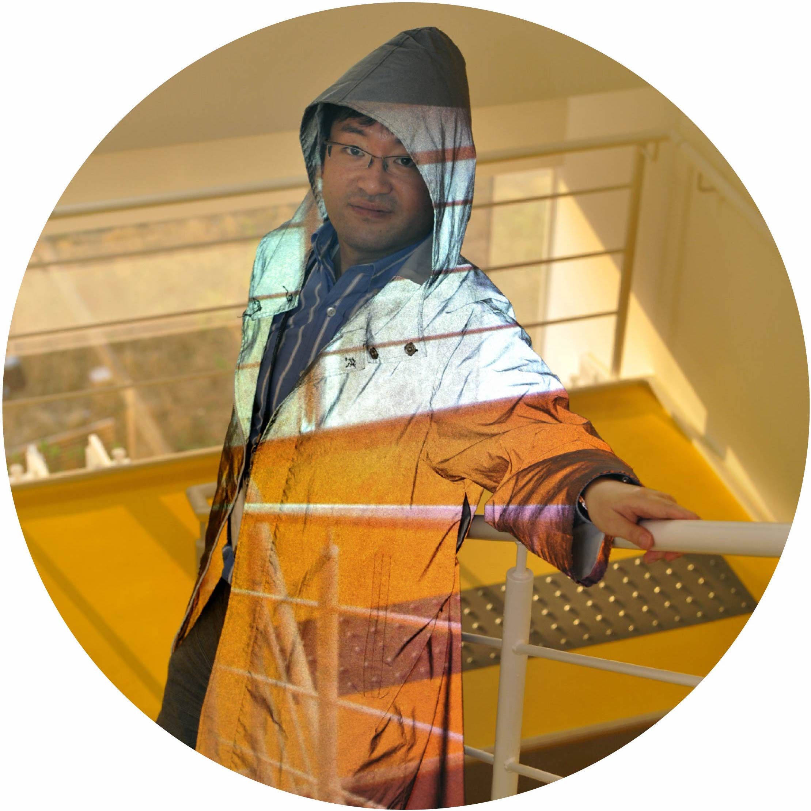
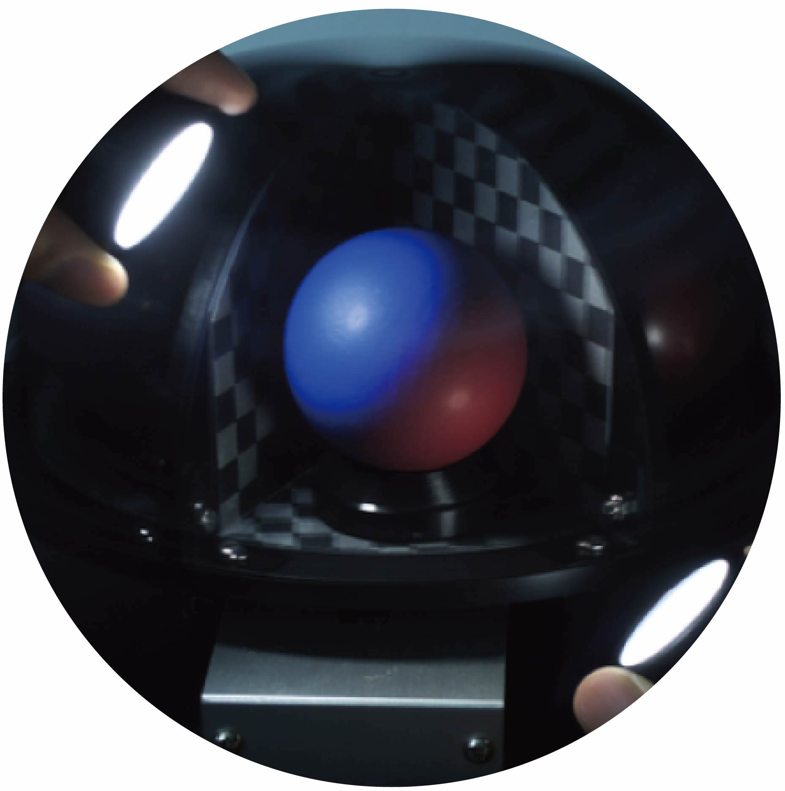
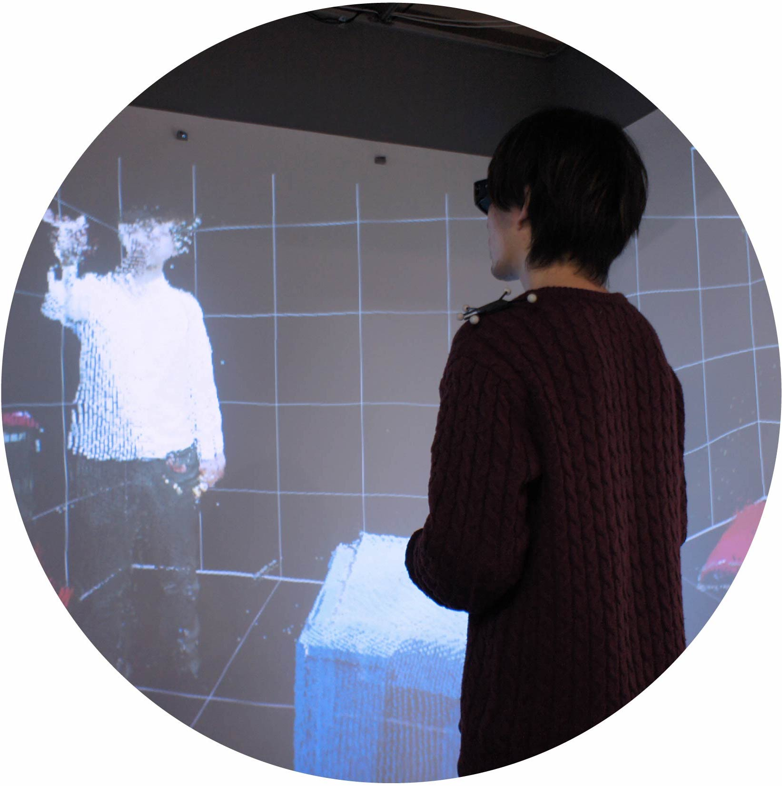
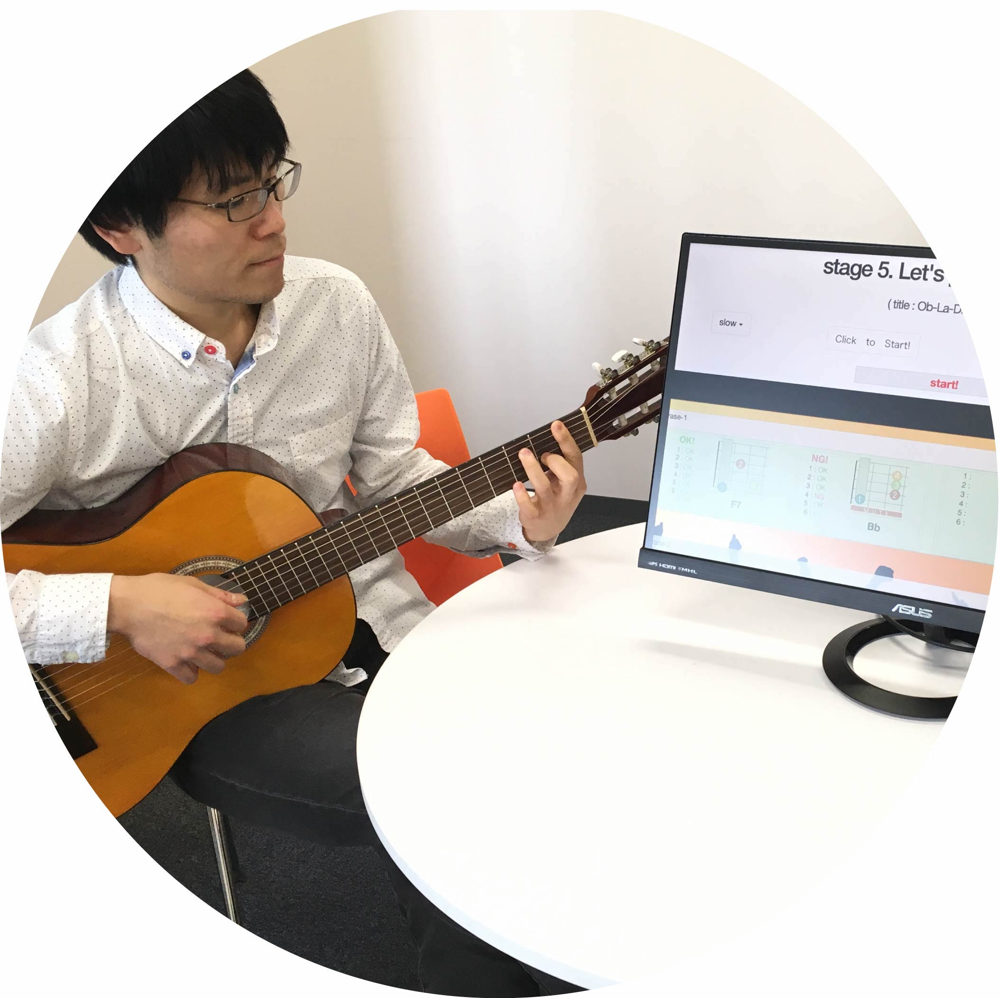

Asami, Kawahara Lab. (Ubiquitous Sensing, Inkjet Circuits)
http://www.akg.t.u-tokyo.ac.jp/
Faculty of Engineering Bldg. 2, 11F, 112C1

Hirose, Tanikawa, Narumi Lab. (Virtual Reality, Augmented Reality)
http://www.cyber.t.u-tokyo.ac.jp/
Faculty of Engineering Bldg. 1, 4F, 405
Igarashi, Sakamoto Lab. (Fabrication, Graphics)
http://www-ui.is.s.u-tokyo.ac.jp/en/
Faculty of Science Bldg.7, 3F, 302

Inami, Hiyama Lab. (Information Somatics)
http://star.rcast.u-tokyo.ac.jp/
Faculty of Engineering Bldg. 1, 4F, 405

Ishikawa, Watanabe Lab. (Sensor Fusion, High Speed Imaging)
http://www.k2.t.u-tokyo.ac.jp/index-e.html
Faculty of Engineering Bldg. 1, 5F, 505

Rekimoto Lab. (Human Augmentation)
https://lab.rekimoto.org/
Shimomura Bldg. B1F (outside of the campus)
Shinoda, Makino Lab. (Haptic Interfaces, Two-dimensional Communication)
http://www.hapis.k.u-tokyo.ac.jp/?lang=en
Faculty of Engineering Bldg. 14, 6F, 605

Yatani Lab. (IIS Lab.) (Ubiquitous Computing, Creativity Support Tools)
http://iis-lab.org/
Faculty of Engineering Bldg. 2, 10F, 101C2